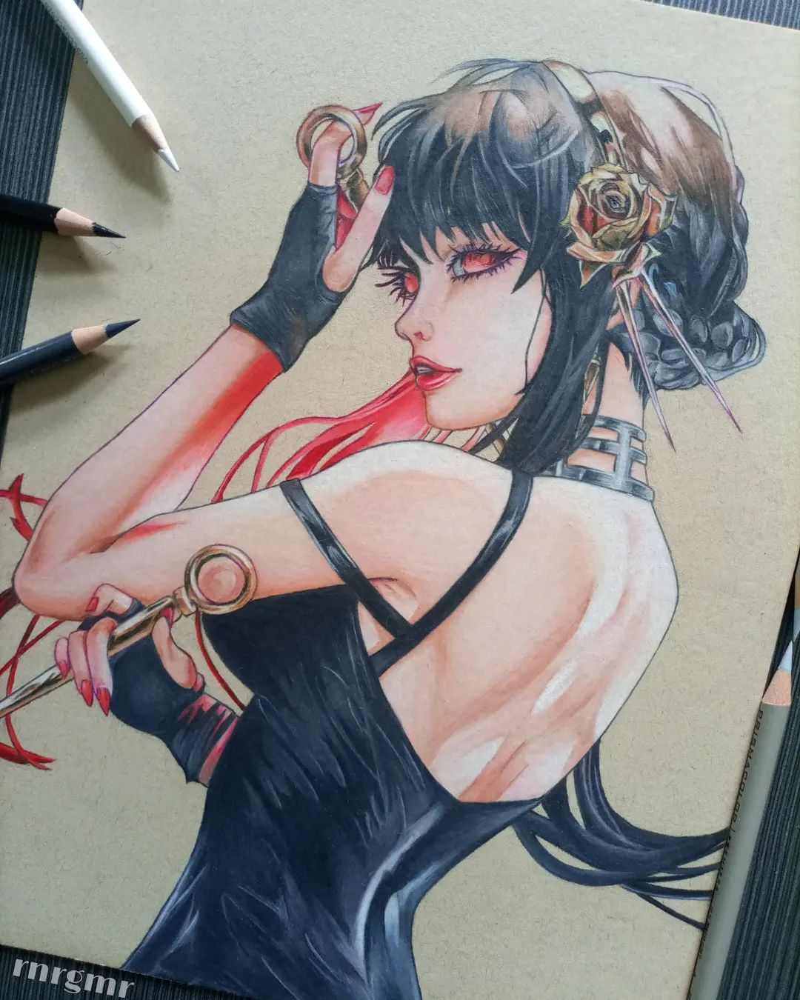
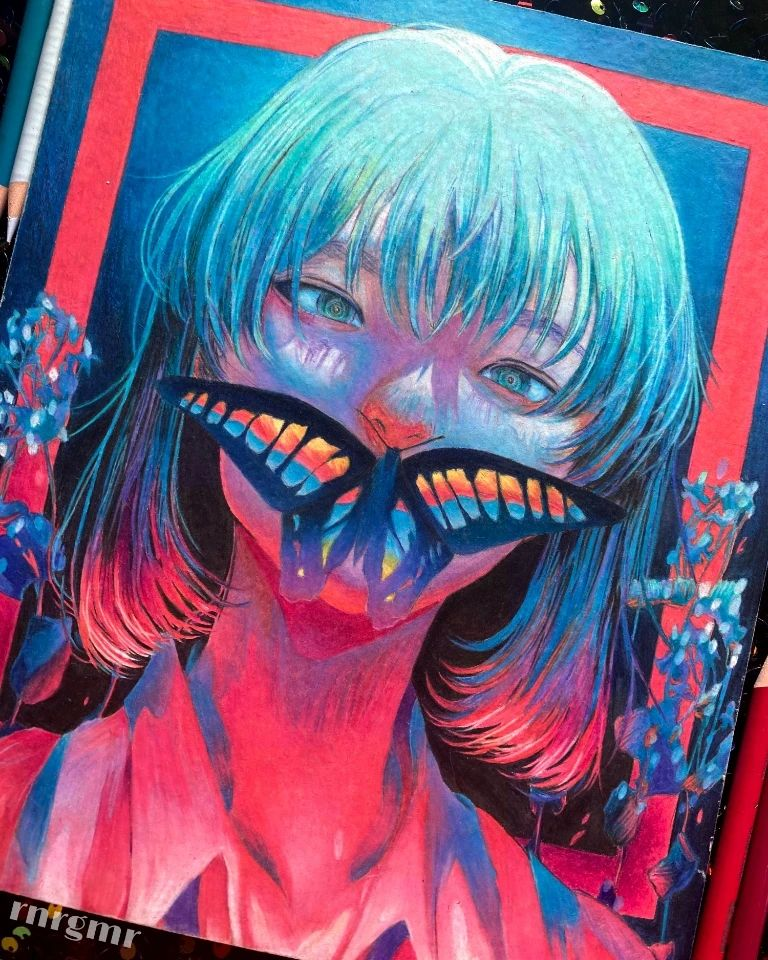
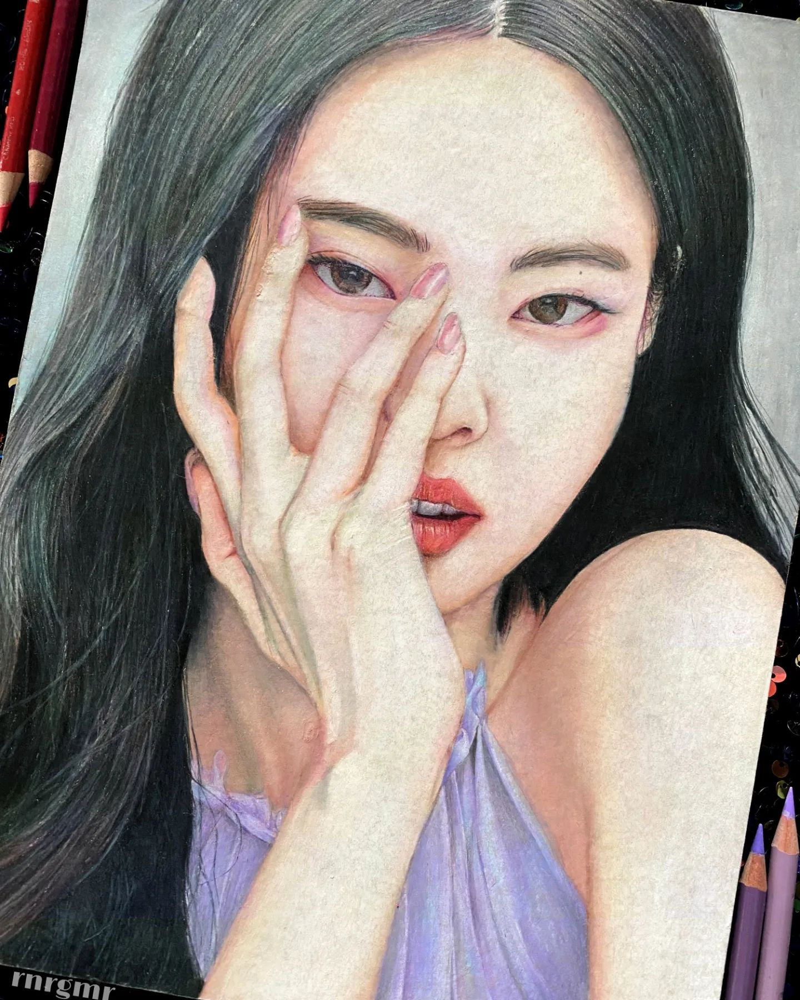

<html></html>
<head>
	<title>rnrgmr Portfolio</title>
	<link rel="stylesheet" href="mycss.css">
</head>
<body>
	<ul class="navbar">
		<li><a href="Home.html">Home</a></li>
        <li><a href="DigiWorks.html">DigiWorks</a></li>
		<li style="font-weight: bold"><a href="TradArt.html" style="color:rgb(255, 255, 255)">TradArt</a></li> 
        <li><a href="contacts.html">My Contacts</a></li>
	</ul>
	<h1>Traditional Artworks</h1>
	<p>I’m a traditional artist specializing in highly realistic artworks. Using charcoal pencils, graphite pencils, and color pencils, </p>
	<p>I bring intricate details and life to every piece. Whether it’s a portrait, still life, or any subject of your choice, my </p>
	<p>passion for precision and realism shines through. If you're looking for a unique, hand-crafted piece, I’m open for commissions.</p>
	<p>Let’s work together to create something truly special!</p>
	<div class="image-container">
		<br><br>
		<br><br>
		<br><br><br><br>
	</div>
	<p class="footer">Created by rnrgmr on Oct 4, 2024</p>
</body>
</html>
